Quasi Dark-Adapted Rapid Light Curve (RLC) Analysis
Author
Sarah Tanja
Published
September 23, 2024
Overview
Here we take the cleaned up data from the quasi-dark adapted rapid light curves and the dark-adapted quantum yield measurements and run some initial anovas between treatments and visualize the data.
This is a mixed design: The experiment has one within-subjects factor and two between-subjects factors. The days of exposure are the within-subjects factor (each anemones was measured four times), and the leachate condition (control vs. low vs. high) and the temperature (ambient vs. hot) are the between-subjects factors.
Install and load packages
if (!requireNamespace("BiocManager", quietly =TRUE))install.packages("BiocManager")BiocManager::install("Matrix")
Bioconductor version 3.16 (BiocManager 1.30.25), R 4.2.2 (2022-10-31 ucrt)
Warning: package(s) not installed when version(s) same as or greater than current; use
`force = TRUE` to re-install: 'Matrix'
── Conflicts ────────────────────────────────────────── tidyverse_conflicts() ──
✖ dplyr::filter() masks stats::filter()
✖ dplyr::lag() masks stats::lag()
ℹ Use the conflicted package (<http://conflicted.r-lib.org/>) to force all conflicts to become errors
library(ggplot2)library(hrbrthemes)
Warning: package 'hrbrthemes' was built under R version 4.2.3
library(lme4)
Loading required package: Matrix
Attaching package: 'Matrix'
The following objects are masked from 'package:tidyr':
expand, pack, unpack
library(lmerTest)
Warning: package 'lmerTest' was built under R version 4.2.3
Attaching package: 'lmerTest'
The following object is masked from 'package:lme4':
lmer
The following object is masked from 'package:stats':
step
library(Rmisc)
Warning: package 'Rmisc' was built under R version 4.2.3
Warning: package 'plyr' was built under R version 4.2.3
------------------------------------------------------------------------------
You have loaded plyr after dplyr - this is likely to cause problems.
If you need functions from both plyr and dplyr, please load plyr first, then dplyr:
library(plyr); library(dplyr)
------------------------------------------------------------------------------
Attaching package: 'plyr'
The following object is masked from 'package:purrr':
compact
The following objects are masked from 'package:dplyr':
arrange, count, desc, failwith, id, mutate, rename, summarise,
summarize
New names:
Rows: 300 Columns: 11
── Column specification
──────────────────────────────────────────────────────── Delimiter: "," chr
(5): sample_id, temp, leachate, species, treatment dbl (6): ...1, Fo, Fm, FvFm,
colony, days_of_exposure
ℹ Use `spec()` to retrieve the full column specification for this data. ℹ
Specify the column types or set `show_col_types = FALSE` to quiet this message.
• `` -> `...1`
Fv/Fm
Data peek
summary(fvfm_alldays)
...1 Fo Fm FvFm
Min. : 1.00 Min. : 24.0 Min. : 87 Min. :0.5490
1st Qu.: 75.75 1st Qu.: 211.8 1st Qu.: 629 1st Qu.:0.6410
Median :150.50 Median : 361.5 Median :1042 Median :0.6570
Mean :150.50 Mean : 402.7 Mean :1160 Mean :0.6554
3rd Qu.:225.25 3rd Qu.: 563.5 3rd Qu.:1630 3rd Qu.:0.6690
Max. :300.00 Max. :1111.0 Max. :2981 Max. :0.7890
sample_id temp colony leachate
Length:300 Length:300 Min. : 1.0 Length:300
Class :character Class :character 1st Qu.: 3.0 Class :character
Mode :character Mode :character Median : 5.5 Mode :character
Mean : 5.5
3rd Qu.: 8.0
Max. :10.0
species days_of_exposure treatment
Length:300 Min. :0 Length:300
Class :character 1st Qu.:1 Class :character
Mode :character Median :2 Mode :character
Mean :2
3rd Qu.:3
Max. :4
Data exploration
Is it normal?
# get the means and standard errorsfvfm.summary <-summarySE(fvfm_alldays, measurevar="FvFm", groupvars=c("leachate","temp","days_of_exposure"))ggplot(fvfm.summary, aes(x=days_of_exposure, y=FvFm, colour = temp, shape = leachate)) +geom_errorbar(aes(ymin=FvFm-se, ymax=FvFm+se), width=.2) +geom_line() +theme_bw() +geom_point(size =2)
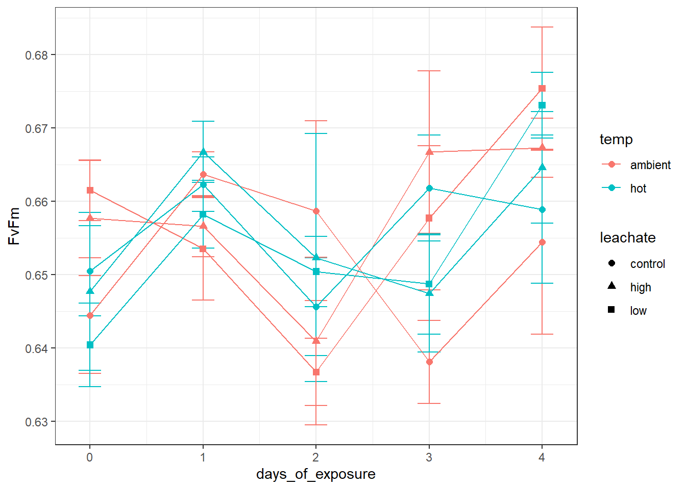
Boxplots
# Create the boxplotggplot(fvfm_alldays, aes(x = treatment, y = FvFm, color = treatment)) +geom_boxplot() +facet_wrap(~ days_of_exposure) +theme_bw() +labs(title ="Photosynthetic efficiency (Fv/Fm) across Treatments and Days",x ="Treatment",y ="Photosynthetic efficiency (Fv/Fm)" ) +theme (axis.text.x =element_blank()) # Remove x-axis labels
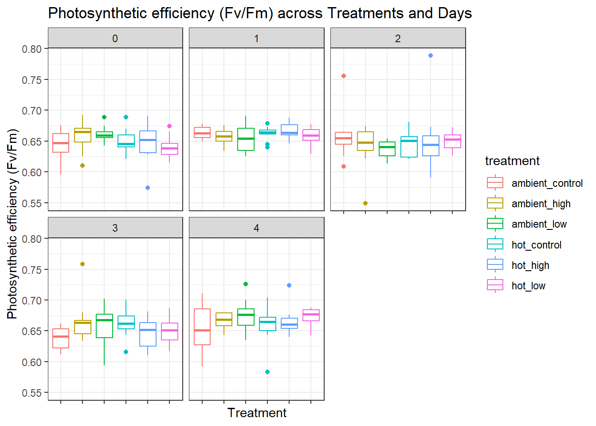
display.brewer.all()
# Select specific colorscolor_heat <-brewer.pal(9, "YlOrBr")[5] # Select the 5th color (a shade of orange/red)color_ambient <-brewer.pal(9, "YlGnBu")[5] # Select the 5th color (a shade of blue/green) from "BuGn"# Print the selected colorsprint(color_heat)
[1] "#FE9929"
print(color_ambient)
[1] "#41B6C4"
Facetgrid
By Day
# Set the order of the temp factorfvfm_alldays$temp <-factor(fvfm_alldays$temp, levels =c("hot", "ambient"))# Set the order of the leachate factorfvfm_alldays$leachate <-factor(fvfm_alldays$leachate, levels =c("control", "low", "high"))# Define custom colors for temp using ColorBrewertemp_colors <-c("hot"=brewer.pal(9, "YlOrBr")[7], # Orange/Red for heat"ambient"=brewer.pal(9, "YlGnBu")[5]) # Blue/Green for ambient# Assuming fvfm_alldays is your dataframe# Create the boxplot with custom colors for temp and viridis for leachatefvfm_facet <-ggplot(fvfm_alldays, aes(x = leachate, y = FvFm, color = temp, fill = leachate)) +geom_boxplot() +facet_grid(. ~ days_of_exposure, switch ="x") +theme_bw() +labs(title ="Photosynthetic efficiency (Fv/Fm) across Treatments and Days of Exposure",x ="Days of Exposure",y ="Photosynthetic efficiency (Fv/Fm)" ) +theme(axis.text.x =element_blank()) +# Remove x-axis labelsscale_color_manual(values = temp_colors) +# Custom colors for tempscale_fill_brewer(palette ="Greys") # Pale sequential fill for leachatefvfm_facet
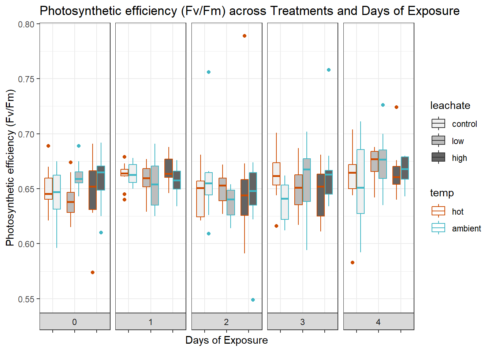
# save the plot as a .pngggsave("../output/fvfm_facet_plot.png", plot = fvfm_facet, width =10, height =6, dpi =600)
By Treatment
# Create the boxplotfvfm_byday_treatment <-ggplot(fvfm_alldays, aes(x =as.factor(treatment), y = FvFm, color =as.factor(days_of_exposure))) +geom_boxplot() +facet_grid(. ~ treatment, switch ="x", scales ="free_x") +theme_bw() +labs(title ="Photosynthetic efficiency (Fv/Fm) across Treatments and Days of Exposure",x ="Treatment",y ="Photosynthetic efficiency (Fv/Fm)" ) +theme(axis.text.x =element_blank(), # remove x-axis labelsstrip.text =element_text(size =6) # adjust facet label size ) fvfm_byday_treatment
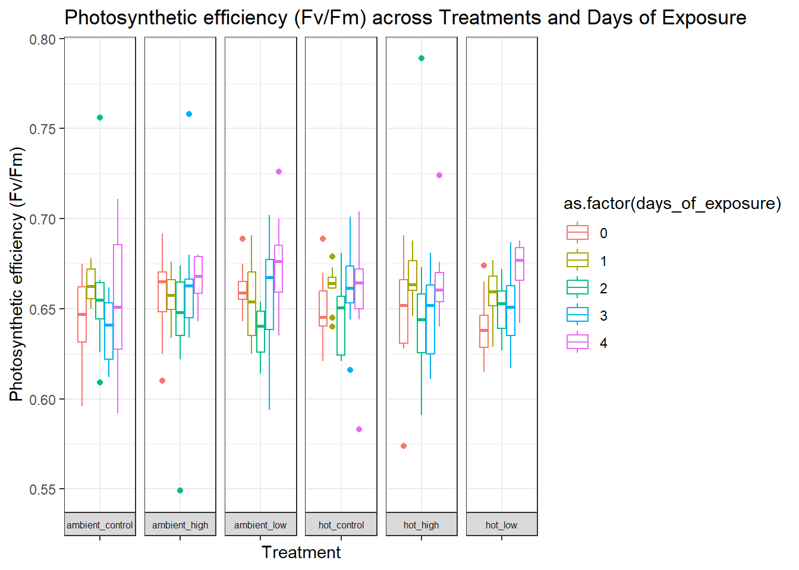
# save the plot as a .pngggsave("../output/fvfm_byday_treatment_plot.png", plot = fvfm_byday_treatment, width =10, height =6, dpi =600)
# Create the boxplotfvfm_byday_treatment <-ggplot(fvfm_alldays, aes(x =as.factor(days_of_exposure), y = FvFm, fill =as.factor(days_of_exposure))) +geom_boxplot() +facet_wrap(~ treatment, scales ="free_x") +theme_bw() +labs(title ="Photosynthetic efficiency (Fv/Fm) across Treatments and Days of Exposure",x ="Days of Exposure",y ="Photosynthetic efficiency (Fv/Fm)" ) +theme(axis.text.x =element_text(angle =45, hjust =1), # Adjust x-axis labels for readabilitystrip.text =element_text(size =12) # Optional: adjust facet label size )fvfm_byday_treatment
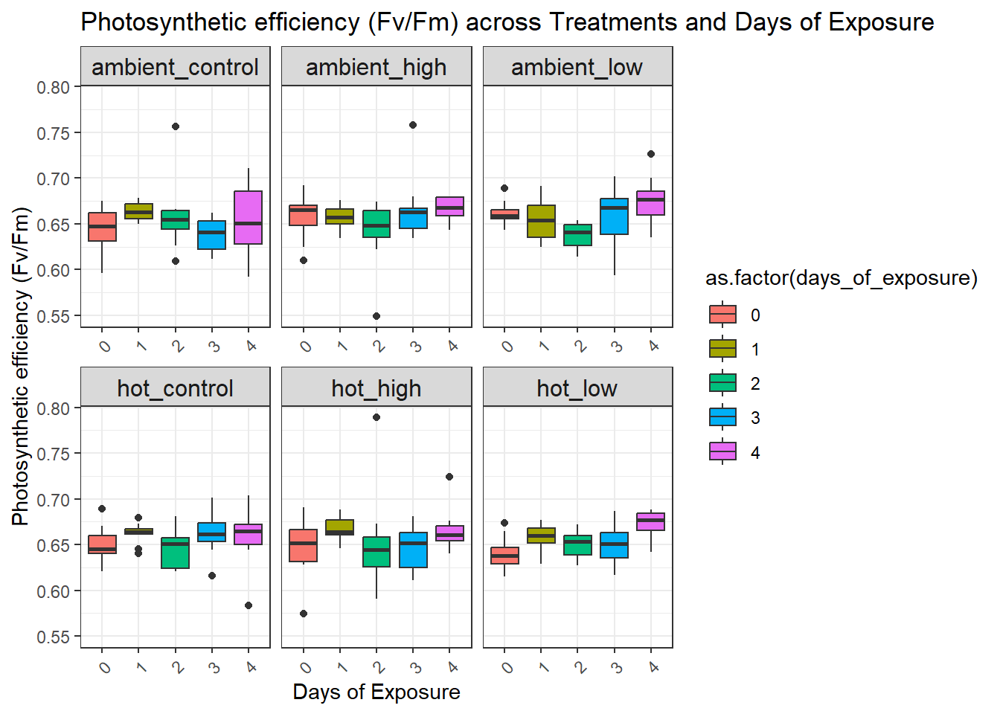
Combined x-axis
# Create a new column combining days_of_exposure and treatmentfvfm_alldays$day_treatment <-interaction(fvfm_alldays$days_of_exposure, fvfm_alldays$treatment)# Create the boxplotfvfm_combo <-ggplot(fvfm_alldays, aes(x = day_treatment, y = FvFm, fill = leachate, color = temp)) +geom_boxplot() +theme_bw() +labs(title ="Photosynthetic efficiency (Fv/Fm) across Treatments and Days",x ="Days of Exposure and Treatment",y ="Photosynthetic efficiency (Fv/Fm)" ) +theme(axis.text.x =element_text(angle =45, hjust =1))fvfm_combo
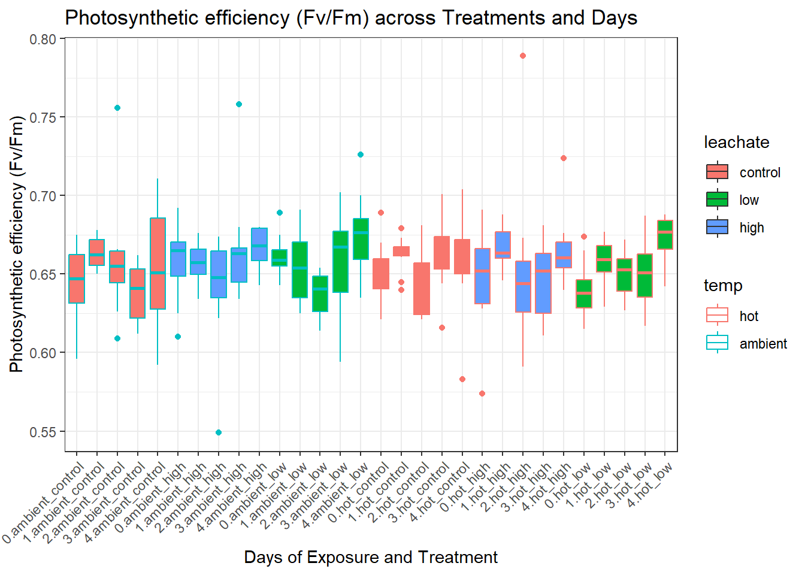
# save the plot as a .pngggsave("../output/fvfm_combo_plot.png", plot = fvfm_combo, width =10, height =6, dpi =600)
New names:
Rows: 320 Columns: 15
── Column specification
──────────────────────────────────────────────────────── Delimiter: "," chr
(8): Date, Type, sample_id, temp, koa_color, leachate, 1:F, treatment dbl (6):
...1, colony, alpha, ETRm, Ik, days_of_exposure time (1): Time
ℹ Use `spec()` to retrieve the full column specification for this data. ℹ
Specify the column types or set `show_col_types = FALSE` to quiet this message.
• `` -> `...1`
Data peek
# Set the order of the leachate factorreg_alldays$leachate <-factor(reg_alldays$leachate, levels =c("control", "low", "high"))
summary(reg_alldays)
...1 Date Time Type
Min. : 1.00 Length:320 Length:320 Length:320
1st Qu.: 80.75 Class :character Class1:hms Class :character
Median :160.50 Mode :character Class2:difftime Mode :character
Mean :160.50 Mode :numeric
3rd Qu.:240.25
Max. :320.00
sample_id colony temp koa_color
Length:320 Min. : 1.000 Length:320 Length:320
Class :character 1st Qu.: 3.000 Class :character Class :character
Mode :character Median : 5.000 Mode :character Mode :character
Mean : 5.459
3rd Qu.: 8.000
Max. :10.000
leachate 1:F alpha ETRm
control:107 Length:320 Min. :0.03000 Min. : 22.54
low :108 Class :character 1st Qu.:0.05500 1st Qu.: 38.34
high :105 Mode :character Median :0.06700 Median : 48.89
Mean :0.07037 Mean : 53.61
3rd Qu.:0.08425 3rd Qu.: 62.72
Max. :0.12000 Max. :161.19
Ik days_of_exposure treatment
Min. : 333.8 Min. :0.000 Length:320
1st Qu.: 614.4 1st Qu.:1.000 Class :character
Median : 745.5 Median :2.000 Mode :character
Mean : 773.4 Mean :2.263
3rd Qu.: 913.8 3rd Qu.:4.000
Max. :1676.6 Max. :4.000
Alpha
Line plot
# Define custom colors for temp using ColorBrewertemp_colors <-c("hot"=brewer.pal(9, "YlOrBr")[7], # Orange/Red for heat"ambient"=brewer.pal(9, "YlGnBu")[5]) # Blue/Green for ambient# get the means and standard errorsalpha.summary <-summarySE(reg_alldays, measurevar="alpha", groupvars=c("leachate","temp","days_of_exposure"))# Set the order of the temp factoralpha.summary$temp <-factor(alpha.summary$temp, levels =c("hot", "ambient"))alpha_line <-ggplot(alpha.summary, aes(x=days_of_exposure, y=alpha, colour = temp, shape = leachate, linetype = leachate)) +geom_errorbar(aes(ymin=alpha-se, ymax=alpha+se), width=.05) +geom_line() +theme_bw() +geom_point(size =3)+scale_color_manual(values = temp_colors)+# Custom colors for templabs(title ="Alpha (a) across Treatments and Day(s) of Exposure",x ="Day(s) of Exposure",y ="Alpha (a)" ) alpha_line
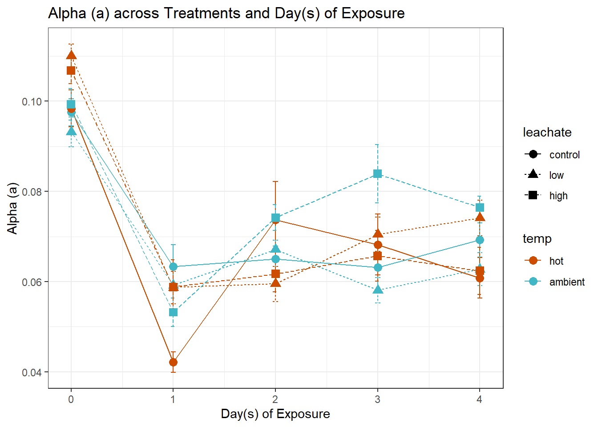
# save the plot as a .pngggsave("../output/alpha_line_plot.png", plot = alpha_line, width =10, height =6, dpi =600)
Facetplot
# Set the order of the temp factorreg_alldays$temp <-factor(reg_alldays$temp, levels =c("hot", "ambient"))# Define custom colors for temp using ColorBrewertemp_colors <-c("hot"=brewer.pal(9, "YlOrBr")[7], # Orange/Red for heat"ambient"=brewer.pal(9, "YlGnBu")[5]) # Blue/Green for ambient# reg_alldays is your dataframe# Create the boxplot with custom colors for temp and viridis for leachatealpha_facet <-ggplot(reg_alldays, aes(x = leachate, y = alpha, color = temp, fill = leachate)) +geom_boxplot() +facet_grid(. ~ days_of_exposure, switch ="x") +theme_bw() +labs(title ="Alpha (a) across Treatments and Day(s) of Exposure",x ="Day(s) of Exposure",y ="Alpha (a)" ) +theme(axis.text.x =element_blank()) +# Remove x-axis labelsscale_color_manual(values = temp_colors) +# Custom colors for tempscale_fill_brewer(palette ="Greys") # Pale sequential fill for leachatealpha_facet
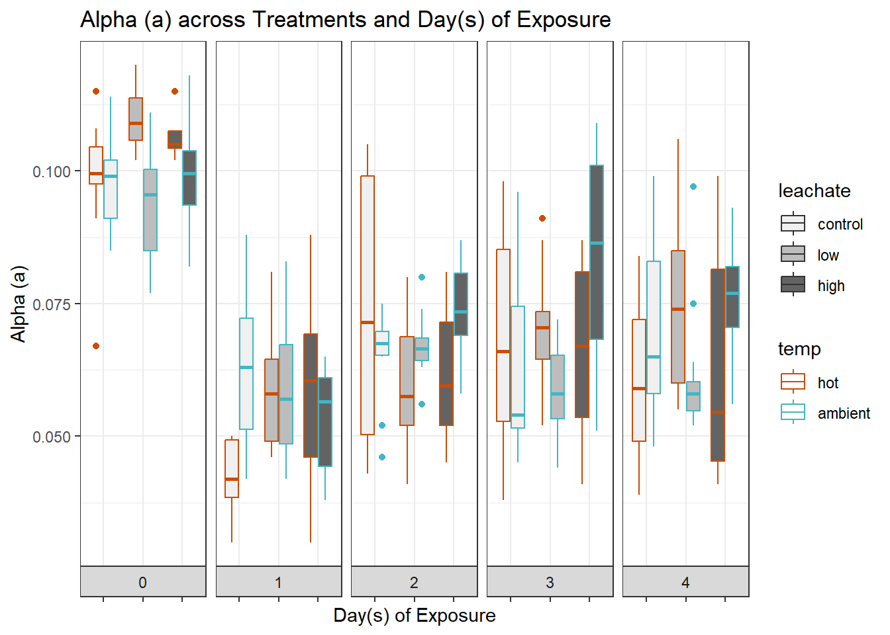
# save the plot as a .pngggsave("../output/alpha_facet_plot.png", plot = alpha_facet, width =10, height =6, dpi =600)
Boxplots
# Create a new column combining days_of_exposure and treatmentreg_alldays$day_treatment <-interaction(reg_alldays$days_of_exposure, reg_alldays$treatment)# Create the boxplotalpha_combo <-ggplot(reg_alldays, aes(x = day_treatment, y = alpha, color = treatment)) +geom_boxplot() +theme_bw() +labs(title ="Alpha (a) across Treatments and Days",x ="Days of Exposure and Treatment",y ="Alpha (a)" ) +theme(axis.text.x =element_text(angle =45, hjust =1))alpha_combo
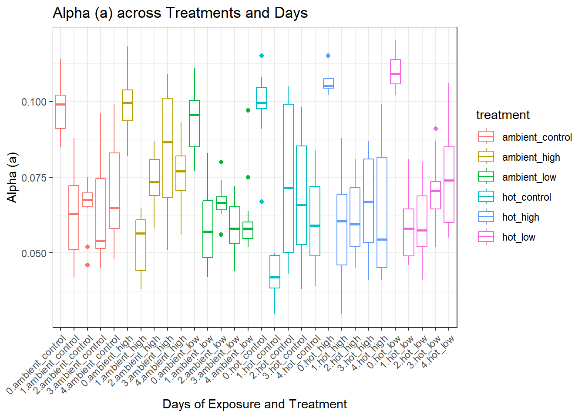
# save the plot as a .pngggsave("../output/alpha_combo_plot.png", plot = alpha_combo, width =10, height =6, dpi =600)
Days of exposure had a significant effect on alpha (p = 6.953e-07 ***)
Saturating Irradiance (Ek/Ik)
Lineplot
# Define custom colors for temp using ColorBrewertemp_colors <-c("hot"=brewer.pal(9, "YlOrBr")[7], # Orange/Red for heat"ambient"=brewer.pal(9, "YlGnBu")[5]) # Blue/Green for ambient# get the means and standard errorsIk.summary <-summarySE(reg_alldays, measurevar="Ik", groupvars=c("leachate","temp","days_of_exposure"))# Set the order of the temp factorIk.summary$temp <-factor(Ik.summary$temp, levels =c("hot", "ambient"))Ik_line <-ggplot(Ik.summary, aes(x=days_of_exposure, y=Ik, colour = temp, shape = leachate, linetype = leachate)) +geom_errorbar(aes(ymin=Ik-se, ymax=Ik+se), width=.05) +geom_line() +theme_bw() +geom_point(size =3)+scale_color_manual(values = temp_colors)+# Custom colors for templabs(title ="Saturating Irradiance (Ik) across Treatments and Days",x ="Day(s) of Exposure",y ="Saturating Irradiance (Ik)" )Ik_line
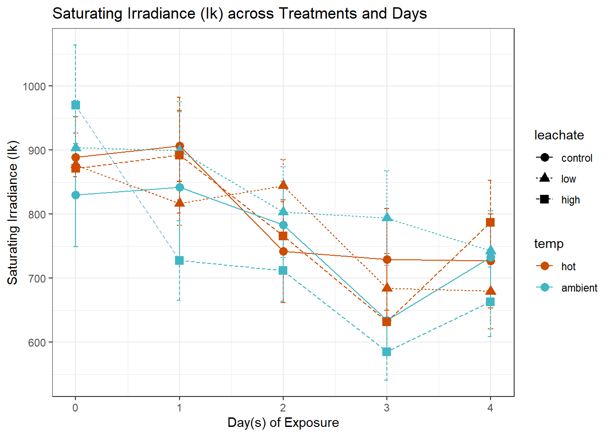
# save the plot as a .pngggsave("../output/Ik_line_plot.png", plot = Ik_line, width =10, height =6, dpi =600)
Boxplots
# Set the order of the temp factorreg_alldays$temp <-factor(reg_alldays$temp, levels =c("hot", "ambient"))# Define custom colors for temp using ColorBrewertemp_colors <-c("hot"=brewer.pal(9, "YlOrBr")[7], # Orange/Red for heat"ambient"=brewer.pal(9, "YlGnBu")[5]) # Blue/Green for ambient# reg_alldays is your dataframe# Create the boxplot with custom colors for temp and viridis for leachateIk_byday <-ggplot(reg_alldays, aes(x = leachate, y = Ik, color = temp, fill = leachate)) +geom_boxplot() +facet_grid(. ~ days_of_exposure, switch ="x") +theme_bw() +labs(title ="Saturating Irradiance (Ik) across Treatments and Days",x ="Day(s) of Exposure",y ="Saturating Irradiance (Ik)" ) +theme(axis.text.x =element_blank()) +# Remove x-axis labelsscale_color_manual(values = temp_colors) +# Custom colors for tempscale_fill_brewer(palette ="Greys") # Pale sequential fill for leachateIk_byday
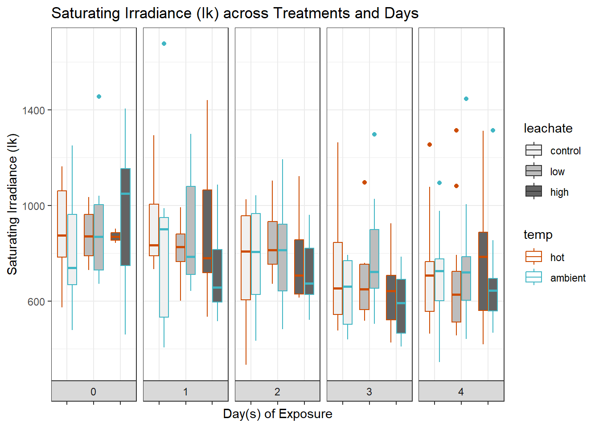
# save the plot as a .pngggsave("../output/Ik_facet_plot.png", plot = Ik_byday, width =10, height =6, dpi =600)
# Create the boxplotIk_combo <-ggplot(reg_alldays, aes(x = day_treatment, y = Ik, color = treatment)) +geom_boxplot() +theme_bw() +labs(title ="Saturating Irradiance (Ik) across Treatments and Days",x ="Days of Exposure and Treatment",y ="Saturating Irradiance (Ik)" ) +theme(axis.text.x =element_text(angle =45, hjust =1))Ik_combo
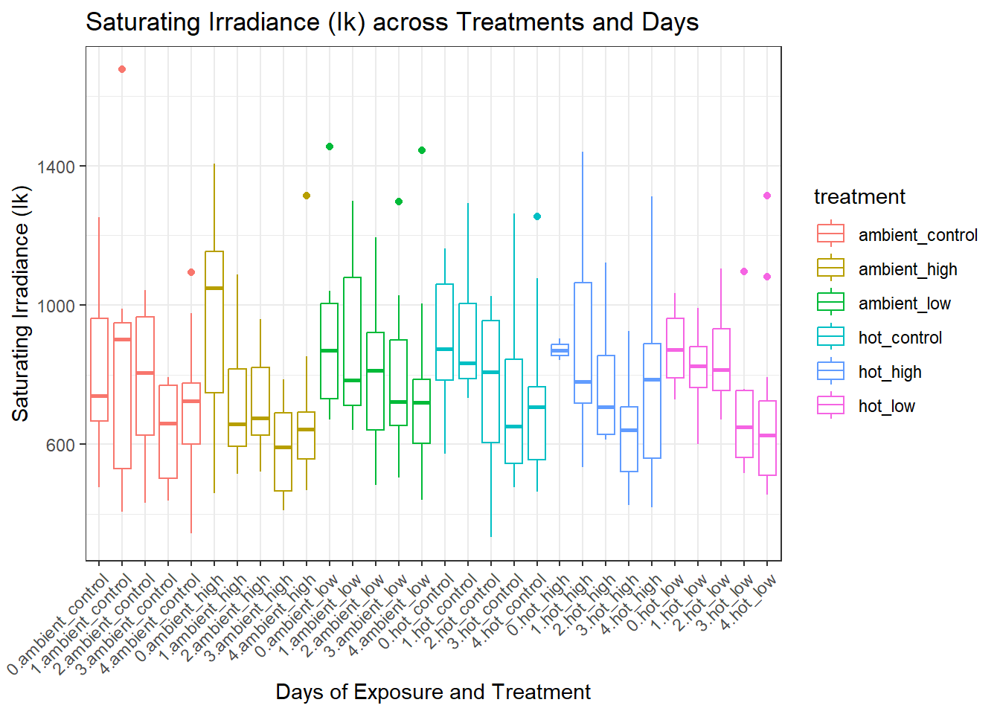
# save the plot as a .pngggsave("../output/Ik_combo_plot.png", plot = Ik_combo, width =10, height =6, dpi =600)
Days of exposure had a significant effect (p = 1.028e-10 ***) on saturating irradiance (Ik)
rETRmax
Data exploration
# Define custom colors for temp using ColorBrewertemp_colors <-c("hot"=brewer.pal(9, "YlOrBr")[7], # Orange/Red for heat"ambient"=brewer.pal(9, "YlGnBu")[5]) # Blue/Green for ambient# get the means and standard errorsETRm.summary <-summarySE(reg_alldays, measurevar="ETRm", groupvars=c("leachate","temp","days_of_exposure"))# Set the order of the temp factorETRm.summary$temp <-factor(ETRm.summary$temp, levels =c("hot", "ambient"))ETRm_line <-ggplot(ETRm.summary, aes(x=days_of_exposure, y=ETRm, colour = temp, shape = leachate, linetype = leachate)) +geom_errorbar(aes(ymin=ETRm-se, ymax=ETRm+se), width=.05) +geom_line() +theme_bw() +geom_point(size =3)+scale_color_manual(values = temp_colors)+# Custom colors for templabs(title ="Maximum Relative Electron Transport Rate (rETRmax) across Treatments and Days",x ="Day(s) of Exposure",y ="Maximum Relative Electron Transport Rate (rETRmax)" )ETRm_line
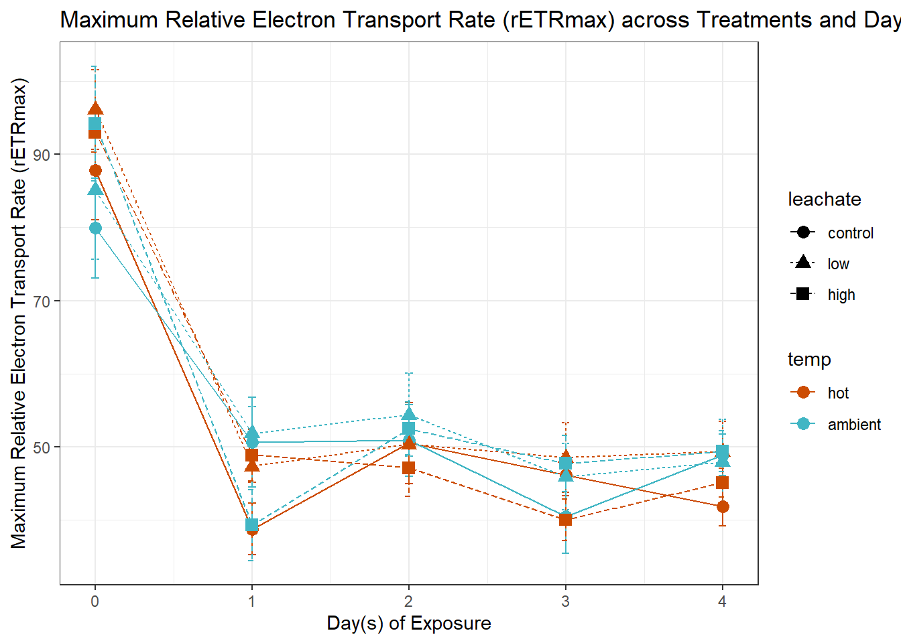
# save the plot as a .pngggsave("../output/rETRm_line_plot.png", plot = ETRm_line, width =10, height =6, dpi =600)
# get the means and standard errorsETRm.summary <-summarySE(reg_alldays, measurevar="ETRm", groupvars=c("leachate","temp","days_of_exposure"))ggplot(ETRm.summary, aes(x=days_of_exposure, y=ETRm, colour = temp, shape = leachate)) +geom_errorbar(aes(ymin=ETRm-se, ymax=ETRm+se), width=.2) +geom_line() +theme_bw() +geom_point(size =2)
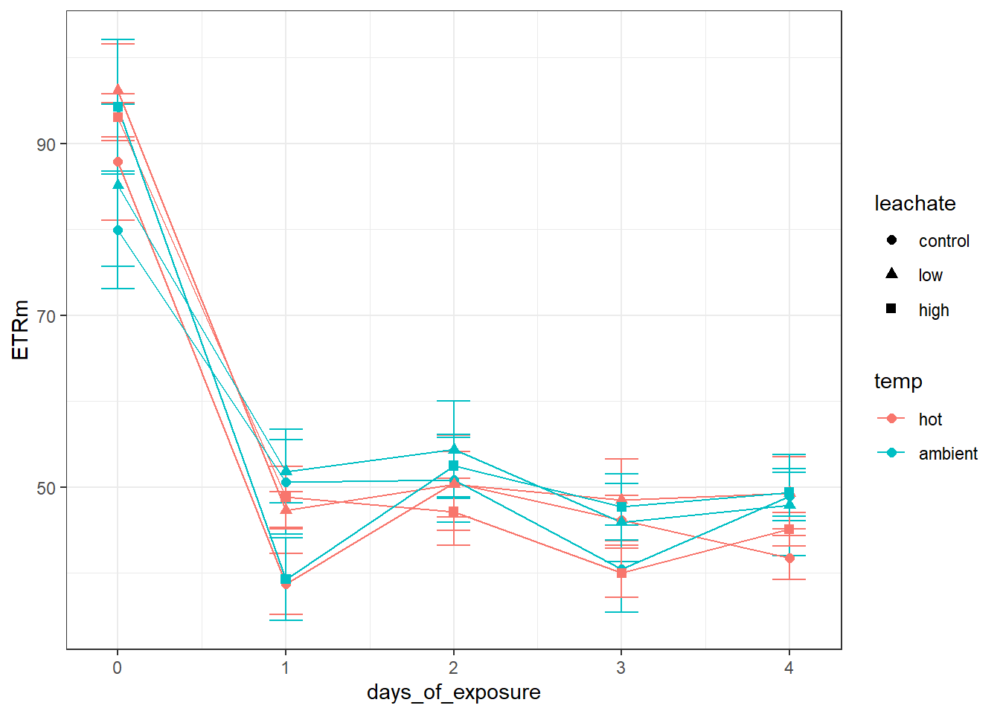
Boxplots
# Set the order of the temp factorreg_alldays$temp <-factor(reg_alldays$temp, levels =c("hot", "ambient"))# Define custom colors for temp using ColorBrewertemp_colors <-c("hot"=brewer.pal(9, "YlOrBr")[7], # Orange/Red for heat"ambient"=brewer.pal(9, "YlGnBu")[5]) # Blue/Green for ambient# reg_alldays is your dataframe# Create the boxplot with custom colors for temp and viridis for leachaterETRm_facet <-ggplot(reg_alldays, aes(x = leachate, y = ETRm, color = temp, fill = leachate)) +geom_boxplot() +facet_grid(. ~ days_of_exposure, switch ="x") +theme_bw() +labs(title ="Maximum Relative Electron Transport Rate (rETRmax) across Treatments and Days",x ="Day(s) of Exposure",y ="Maximum Relative Electron Transport Rate (rETRmax)" ) +theme(axis.text.x =element_blank()) +# Remove x-axis labelsscale_color_manual(values = temp_colors) +# Custom colors for tempscale_fill_brewer(palette ="Greys") # Pale sequential fill for leachaterETRm_facet
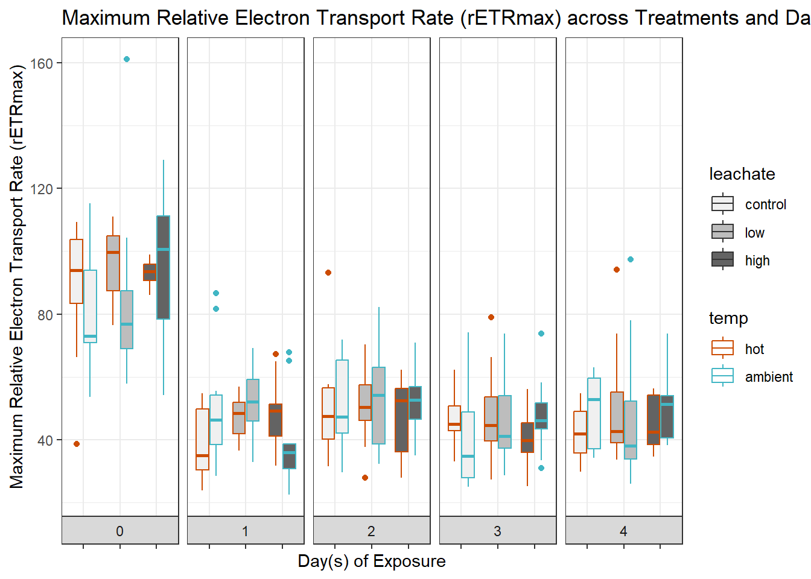
# save the plot as a .pngggsave("../output/rETRm_facet_plot.png", plot = rETRm_facet, width =10, height =6, dpi =600)
# Create a named vector for labelsday_labels <-setNames(reg_alldays$days_of_exposure, reg_alldays$day_treatment)# Create the boxplotrETRm_combo <-ggplot(reg_alldays, aes(x = day_treatment, y = ETRm, color = treatment)) +geom_boxplot() +theme_bw() +labs(title ="rETRmax across Treatments and Days",x ="Days of Exposure across Treatments",y ="rETRmax" ) +theme(axis.text.x =element_text(angle =45, hjust =1)#axis.text.x = element_blank(), # Remove x-axis text labels )+scale_x_discrete(labels = day_labels)rETRm_combo
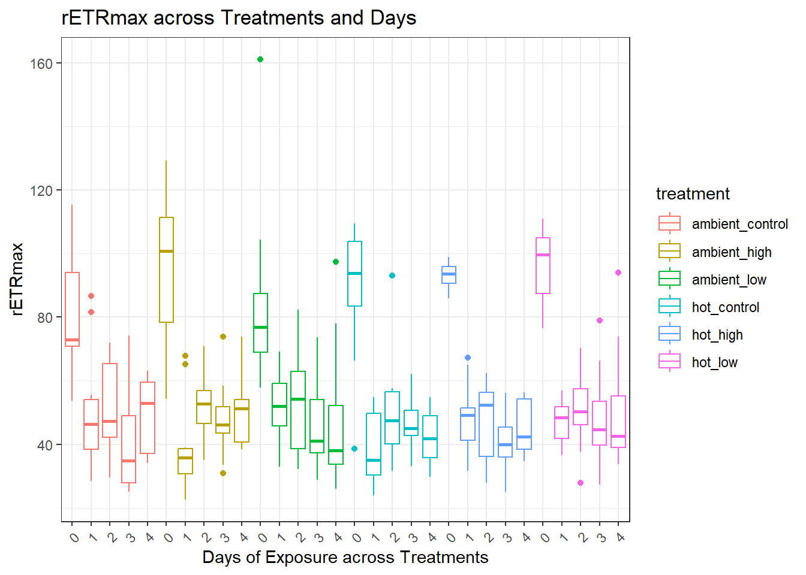
# save the plot as a .pngggsave("../output/rETRm_combo_plot.png", plot = rETRm_combo, width =10, height =6, dpi =600)
Relative maximum electron transport rate (rETRmax) was signficantly affected by duration of experiment (p = <2e-16*** ) only
Source Code
---title: "Run initial two-way ANOVAS"subtitle: "Quasi Dark-Adapted Rapid Light Curve (RLC) Analysis"author: "Sarah Tanja"date: "`r format(Sys.time(), '%d %B, %Y')`" format: html: df-print: paged toc: true toc-location: right smooth-scroll: true link-external-icon: true link-external-newwindow: true code-fold: false code-tools: true code-copy: true highlight-style: breeze code-overflow: wrap theme: mintyeditor: markdown: wrap: 72---# OverviewHere we take the cleaned up data from the quasi-dark adapted rapid lightcurves and the dark-adapted quantum yield measurements and run someinitial anovas between treatments and visualize the data.Repeated measures ANOVA resources: -https://courses.washington.edu/psy524a/\_book/repeated-measures-anova.html#repeated-measures-with-more-than-two-levelsGeneralized Linear Mixed Models (GLMM) resources:Mixed Design Examples:<https://courses.washington.edu/psy524a/_book/linear-mixed-models.html#using-lmer-for-a-repeated-measures-design:~:text=example%2C%20mixed%20designs%3A-,24.3%20Mixed%20Design%20Example%3A%20Effect%20of%20Napping%20and%20Time%20on%20Perceptual%20Performance,-A%20mixed%2Ddesign>> This is a mixed design: The experiment has one within-subjects factor> and two between-subjects factors. The days of exposure are the> within-subjects factor (each anemones was measured four times), and> the leachate condition (control vs. low vs. high) and the temperature> (ambient vs. hot) are the between-subjects factors.# Install and load packages```{r}if (!requireNamespace("BiocManager", quietly =TRUE))install.packages("BiocManager")BiocManager::install("Matrix")``````{r}# Install packagesif ("tidyverse"%in%rownames(installed.packages()) =='FALSE') install.packages('tidyverse')if ("dplyr"%in%rownames(installed.packages()) =='FALSE') install.packages('dplyr')if ("ggplot2"%in%rownames(installed.packages()) =='FALSE') install.packages('ggplot2')if ("hrbrthemes"%in%rownames(installed.packages()) =='FALSE') install.packages('hrbrthemes')if ("lme4"%in%rownames(installed.packages()) =='FALSE') install.packages('lme4')if ("lmerTest"%in%rownames(installed.packages()) =='FALSE') install.packages('lmerTest')if ("Rmisc"%in%rownames(installed.packages()) =='FALSE') install.packages('Rmisc')# Load packageslibrary(dplyr)library(tidyverse)library(ggplot2)library(hrbrthemes)library(lme4)library(lmerTest)library(Rmisc)library(RColorBrewer)```# Pull in Fv/Fm data```{r}fvfm_alldays <-read_csv("../output/fvfm_alldays.csv")```# Fv/Fm## Data peek```{r}summary(fvfm_alldays)```## Data exploration### Is it normal?```{r}# get the means and standard errorsfvfm.summary <-summarySE(fvfm_alldays, measurevar="FvFm", groupvars=c("leachate","temp","days_of_exposure"))ggplot(fvfm.summary, aes(x=days_of_exposure, y=FvFm, colour = temp, shape = leachate)) +geom_errorbar(aes(ymin=FvFm-se, ymax=FvFm+se), width=.2) +geom_line() +theme_bw() +geom_point(size =2)```## Boxplots```{r}# Create the boxplotggplot(fvfm_alldays, aes(x = treatment, y = FvFm, color = treatment)) +geom_boxplot() +facet_wrap(~ days_of_exposure) +theme_bw() +labs(title ="Photosynthetic efficiency (Fv/Fm) across Treatments and Days",x ="Treatment",y ="Photosynthetic efficiency (Fv/Fm)" ) +theme (axis.text.x =element_blank()) # Remove x-axis labels``````{r}display.brewer.all()``````{r}# Select specific colorscolor_heat <-brewer.pal(9, "YlOrBr")[5] # Select the 5th color (a shade of orange/red)color_ambient <-brewer.pal(9, "YlGnBu")[5] # Select the 5th color (a shade of blue/green) from "BuGn"# Print the selected colorsprint(color_heat)print(color_ambient)```#### Facetgrid##### By Day ```{r}# Set the order of the temp factorfvfm_alldays$temp <-factor(fvfm_alldays$temp, levels =c("hot", "ambient"))# Set the order of the leachate factorfvfm_alldays$leachate <-factor(fvfm_alldays$leachate, levels =c("control", "low", "high"))# Define custom colors for temp using ColorBrewertemp_colors <-c("hot"=brewer.pal(9, "YlOrBr")[7], # Orange/Red for heat"ambient"=brewer.pal(9, "YlGnBu")[5]) # Blue/Green for ambient# Assuming fvfm_alldays is your dataframe# Create the boxplot with custom colors for temp and viridis for leachatefvfm_facet <-ggplot(fvfm_alldays, aes(x = leachate, y = FvFm, color = temp, fill = leachate)) +geom_boxplot() +facet_grid(. ~ days_of_exposure, switch ="x") +theme_bw() +labs(title ="Photosynthetic efficiency (Fv/Fm) across Treatments and Days of Exposure",x ="Days of Exposure",y ="Photosynthetic efficiency (Fv/Fm)" ) +theme(axis.text.x =element_blank()) +# Remove x-axis labelsscale_color_manual(values = temp_colors) +# Custom colors for tempscale_fill_brewer(palette ="Greys") # Pale sequential fill for leachatefvfm_facet# save the plot as a .pngggsave("../output/fvfm_facet_plot.png", plot = fvfm_facet, width =10, height =6, dpi =600)```##### By Treatment```{r}# Create the boxplotfvfm_byday_treatment <-ggplot(fvfm_alldays, aes(x =as.factor(treatment), y = FvFm, color =as.factor(days_of_exposure))) +geom_boxplot() +facet_grid(. ~ treatment, switch ="x", scales ="free_x") +theme_bw() +labs(title ="Photosynthetic efficiency (Fv/Fm) across Treatments and Days of Exposure",x ="Treatment",y ="Photosynthetic efficiency (Fv/Fm)" ) +theme(axis.text.x =element_blank(), # remove x-axis labelsstrip.text =element_text(size =6) # adjust facet label size ) fvfm_byday_treatment# save the plot as a .pngggsave("../output/fvfm_byday_treatment_plot.png", plot = fvfm_byday_treatment, width =10, height =6, dpi =600)``````{r}# Create the boxplotfvfm_byday_treatment <-ggplot(fvfm_alldays, aes(x =as.factor(days_of_exposure), y = FvFm, fill =as.factor(days_of_exposure))) +geom_boxplot() +facet_wrap(~ treatment, scales ="free_x") +theme_bw() +labs(title ="Photosynthetic efficiency (Fv/Fm) across Treatments and Days of Exposure",x ="Days of Exposure",y ="Photosynthetic efficiency (Fv/Fm)" ) +theme(axis.text.x =element_text(angle =45, hjust =1), # Adjust x-axis labels for readabilitystrip.text =element_text(size =12) # Optional: adjust facet label size )fvfm_byday_treatment```#### Combined x-axis```{r}# Create a new column combining days_of_exposure and treatmentfvfm_alldays$day_treatment <-interaction(fvfm_alldays$days_of_exposure, fvfm_alldays$treatment)# Create the boxplotfvfm_combo <-ggplot(fvfm_alldays, aes(x = day_treatment, y = FvFm, fill = leachate, color = temp)) +geom_boxplot() +theme_bw() +labs(title ="Photosynthetic efficiency (Fv/Fm) across Treatments and Days",x ="Days of Exposure and Treatment",y ="Photosynthetic efficiency (Fv/Fm)" ) +theme(axis.text.x =element_text(angle =45, hjust =1))fvfm_combo# save the plot as a .pngggsave("../output/fvfm_combo_plot.png", plot = fvfm_combo, width =10, height =6, dpi =600)```## GLMM```{r}lmer.fvfm <-lmer(FvFm ~ leachate*temp*days_of_exposure + (1|sample_id), data=fvfm_alldays)anova(lmer.fvfm)```> Duration of experiment had a significant effect (p = 0.02158) \*> on dark-adapted quantum yield (Fv/Fm)>> # Pull in RLC datareg stands for regression from Jasby & Platt 1979```{r}reg_alldays <-read_csv("../output/reg_alldays.csv")```## Data peek```{r}# Set the order of the leachate factorreg_alldays$leachate <-factor(reg_alldays$leachate, levels =c("control", "low", "high"))``````{r}summary(reg_alldays)```# Alpha## Line plot```{r}# Define custom colors for temp using ColorBrewertemp_colors <-c("hot"=brewer.pal(9, "YlOrBr")[7], # Orange/Red for heat"ambient"=brewer.pal(9, "YlGnBu")[5]) # Blue/Green for ambient# get the means and standard errorsalpha.summary <-summarySE(reg_alldays, measurevar="alpha", groupvars=c("leachate","temp","days_of_exposure"))# Set the order of the temp factoralpha.summary$temp <-factor(alpha.summary$temp, levels =c("hot", "ambient"))alpha_line <-ggplot(alpha.summary, aes(x=days_of_exposure, y=alpha, colour = temp, shape = leachate, linetype = leachate)) +geom_errorbar(aes(ymin=alpha-se, ymax=alpha+se), width=.05) +geom_line() +theme_bw() +geom_point(size =3)+scale_color_manual(values = temp_colors)+# Custom colors for templabs(title ="Alpha (a) across Treatments and Day(s) of Exposure",x ="Day(s) of Exposure",y ="Alpha (a)" ) alpha_line# save the plot as a .pngggsave("../output/alpha_line_plot.png", plot = alpha_line, width =10, height =6, dpi =600)```## Facetplot```{r}# Set the order of the temp factorreg_alldays$temp <-factor(reg_alldays$temp, levels =c("hot", "ambient"))# Define custom colors for temp using ColorBrewertemp_colors <-c("hot"=brewer.pal(9, "YlOrBr")[7], # Orange/Red for heat"ambient"=brewer.pal(9, "YlGnBu")[5]) # Blue/Green for ambient# reg_alldays is your dataframe# Create the boxplot with custom colors for temp and viridis for leachatealpha_facet <-ggplot(reg_alldays, aes(x = leachate, y = alpha, color = temp, fill = leachate)) +geom_boxplot() +facet_grid(. ~ days_of_exposure, switch ="x") +theme_bw() +labs(title ="Alpha (a) across Treatments and Day(s) of Exposure",x ="Day(s) of Exposure",y ="Alpha (a)" ) +theme(axis.text.x =element_blank()) +# Remove x-axis labelsscale_color_manual(values = temp_colors) +# Custom colors for tempscale_fill_brewer(palette ="Greys") # Pale sequential fill for leachatealpha_facet# save the plot as a .pngggsave("../output/alpha_facet_plot.png", plot = alpha_facet, width =10, height =6, dpi =600)```## Boxplots```{r}# Create a new column combining days_of_exposure and treatmentreg_alldays$day_treatment <-interaction(reg_alldays$days_of_exposure, reg_alldays$treatment)# Create the boxplotalpha_combo <-ggplot(reg_alldays, aes(x = day_treatment, y = alpha, color = treatment)) +geom_boxplot() +theme_bw() +labs(title ="Alpha (a) across Treatments and Days",x ="Days of Exposure and Treatment",y ="Alpha (a)" ) +theme(axis.text.x =element_text(angle =45, hjust =1))alpha_combo# save the plot as a .pngggsave("../output/alpha_combo_plot.png", plot = alpha_combo, width =10, height =6, dpi =600)```## GLMM```{r}lmer.alpha <-lmer(alpha ~ leachate*temp*days_of_exposure + (1|sample_id), data=reg_alldays)anova(lmer.alpha)```> Days of exposure had a significant effect on alpha (p = 6.953e-07 \*\*\*)# Saturating Irradiance (Ek/Ik)## Lineplot```{r}# Define custom colors for temp using ColorBrewertemp_colors <-c("hot"=brewer.pal(9, "YlOrBr")[7], # Orange/Red for heat"ambient"=brewer.pal(9, "YlGnBu")[5]) # Blue/Green for ambient# get the means and standard errorsIk.summary <-summarySE(reg_alldays, measurevar="Ik", groupvars=c("leachate","temp","days_of_exposure"))# Set the order of the temp factorIk.summary$temp <-factor(Ik.summary$temp, levels =c("hot", "ambient"))Ik_line <-ggplot(Ik.summary, aes(x=days_of_exposure, y=Ik, colour = temp, shape = leachate, linetype = leachate)) +geom_errorbar(aes(ymin=Ik-se, ymax=Ik+se), width=.05) +geom_line() +theme_bw() +geom_point(size =3)+scale_color_manual(values = temp_colors)+# Custom colors for templabs(title ="Saturating Irradiance (Ik) across Treatments and Days",x ="Day(s) of Exposure",y ="Saturating Irradiance (Ik)" )Ik_line# save the plot as a .pngggsave("../output/Ik_line_plot.png", plot = Ik_line, width =10, height =6, dpi =600)```## Boxplots```{r}# Set the order of the temp factorreg_alldays$temp <-factor(reg_alldays$temp, levels =c("hot", "ambient"))# Define custom colors for temp using ColorBrewertemp_colors <-c("hot"=brewer.pal(9, "YlOrBr")[7], # Orange/Red for heat"ambient"=brewer.pal(9, "YlGnBu")[5]) # Blue/Green for ambient# reg_alldays is your dataframe# Create the boxplot with custom colors for temp and viridis for leachateIk_byday <-ggplot(reg_alldays, aes(x = leachate, y = Ik, color = temp, fill = leachate)) +geom_boxplot() +facet_grid(. ~ days_of_exposure, switch ="x") +theme_bw() +labs(title ="Saturating Irradiance (Ik) across Treatments and Days",x ="Day(s) of Exposure",y ="Saturating Irradiance (Ik)" ) +theme(axis.text.x =element_blank()) +# Remove x-axis labelsscale_color_manual(values = temp_colors) +# Custom colors for tempscale_fill_brewer(palette ="Greys") # Pale sequential fill for leachateIk_byday# save the plot as a .pngggsave("../output/Ik_facet_plot.png", plot = Ik_byday, width =10, height =6, dpi =600)``````{r}# Create the boxplotIk_combo <-ggplot(reg_alldays, aes(x = day_treatment, y = Ik, color = treatment)) +geom_boxplot() +theme_bw() +labs(title ="Saturating Irradiance (Ik) across Treatments and Days",x ="Days of Exposure and Treatment",y ="Saturating Irradiance (Ik)" ) +theme(axis.text.x =element_text(angle =45, hjust =1))Ik_combo# save the plot as a .pngggsave("../output/Ik_combo_plot.png", plot = Ik_combo, width =10, height =6, dpi =600)```## GLMM```{r}lmer.Ik <-lmer(Ik ~ leachate*temp*days_of_exposure + (1|sample_id), data=reg_alldays)anova(lmer.Ik)```Days of exposure had a significant effect (p = 1.028e-10 \*\*\*) onsaturating irradiance (Ik)# rETR~max~## Data exploration```{r}# Define custom colors for temp using ColorBrewertemp_colors <-c("hot"=brewer.pal(9, "YlOrBr")[7], # Orange/Red for heat"ambient"=brewer.pal(9, "YlGnBu")[5]) # Blue/Green for ambient# get the means and standard errorsETRm.summary <-summarySE(reg_alldays, measurevar="ETRm", groupvars=c("leachate","temp","days_of_exposure"))# Set the order of the temp factorETRm.summary$temp <-factor(ETRm.summary$temp, levels =c("hot", "ambient"))ETRm_line <-ggplot(ETRm.summary, aes(x=days_of_exposure, y=ETRm, colour = temp, shape = leachate, linetype = leachate)) +geom_errorbar(aes(ymin=ETRm-se, ymax=ETRm+se), width=.05) +geom_line() +theme_bw() +geom_point(size =3)+scale_color_manual(values = temp_colors)+# Custom colors for templabs(title ="Maximum Relative Electron Transport Rate (rETRmax) across Treatments and Days",x ="Day(s) of Exposure",y ="Maximum Relative Electron Transport Rate (rETRmax)" )ETRm_line# save the plot as a .pngggsave("../output/rETRm_line_plot.png", plot = ETRm_line, width =10, height =6, dpi =600)``````{r}# get the means and standard errorsETRm.summary <-summarySE(reg_alldays, measurevar="ETRm", groupvars=c("leachate","temp","days_of_exposure"))ggplot(ETRm.summary, aes(x=days_of_exposure, y=ETRm, colour = temp, shape = leachate)) +geom_errorbar(aes(ymin=ETRm-se, ymax=ETRm+se), width=.2) +geom_line() +theme_bw() +geom_point(size =2)```## Boxplots```{r}# Set the order of the temp factorreg_alldays$temp <-factor(reg_alldays$temp, levels =c("hot", "ambient"))# Define custom colors for temp using ColorBrewertemp_colors <-c("hot"=brewer.pal(9, "YlOrBr")[7], # Orange/Red for heat"ambient"=brewer.pal(9, "YlGnBu")[5]) # Blue/Green for ambient# reg_alldays is your dataframe# Create the boxplot with custom colors for temp and viridis for leachaterETRm_facet <-ggplot(reg_alldays, aes(x = leachate, y = ETRm, color = temp, fill = leachate)) +geom_boxplot() +facet_grid(. ~ days_of_exposure, switch ="x") +theme_bw() +labs(title ="Maximum Relative Electron Transport Rate (rETRmax) across Treatments and Days",x ="Day(s) of Exposure",y ="Maximum Relative Electron Transport Rate (rETRmax)" ) +theme(axis.text.x =element_blank()) +# Remove x-axis labelsscale_color_manual(values = temp_colors) +# Custom colors for tempscale_fill_brewer(palette ="Greys") # Pale sequential fill for leachaterETRm_facet# save the plot as a .pngggsave("../output/rETRm_facet_plot.png", plot = rETRm_facet, width =10, height =6, dpi =600)``````{r}# Create a named vector for labelsday_labels <-setNames(reg_alldays$days_of_exposure, reg_alldays$day_treatment)# Create the boxplotrETRm_combo <-ggplot(reg_alldays, aes(x = day_treatment, y = ETRm, color = treatment)) +geom_boxplot() +theme_bw() +labs(title ="rETRmax across Treatments and Days",x ="Days of Exposure across Treatments",y ="rETRmax" ) +theme(axis.text.x =element_text(angle =45, hjust =1)#axis.text.x = element_blank(), # Remove x-axis text labels )+scale_x_discrete(labels = day_labels)rETRm_combo# save the plot as a .pngggsave("../output/rETRm_combo_plot.png", plot = rETRm_combo, width =10, height =6, dpi =600)```## GLMM```{r}lmer.ETRm <-lmer(ETRm ~ leachate*temp*days_of_exposure + (1|sample_id), data=reg_alldays)anova(lmer.ETRm)```> Relative maximum electron transport rate (rETR~max~) was signficantly> affected by duration of experiment> (p = <2e-16*** ) only